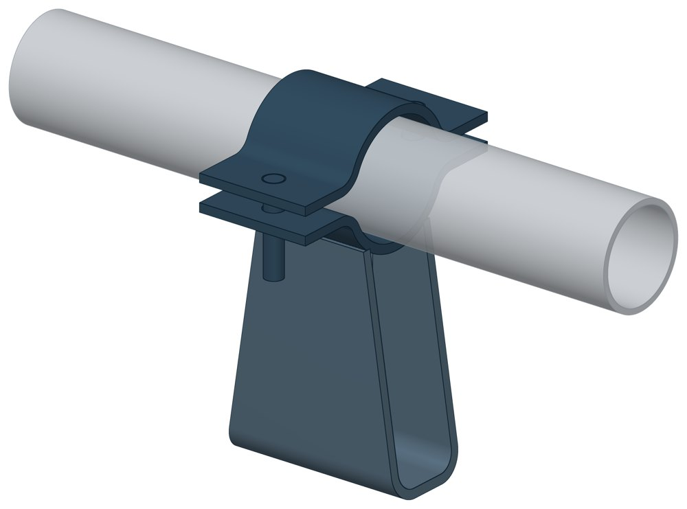
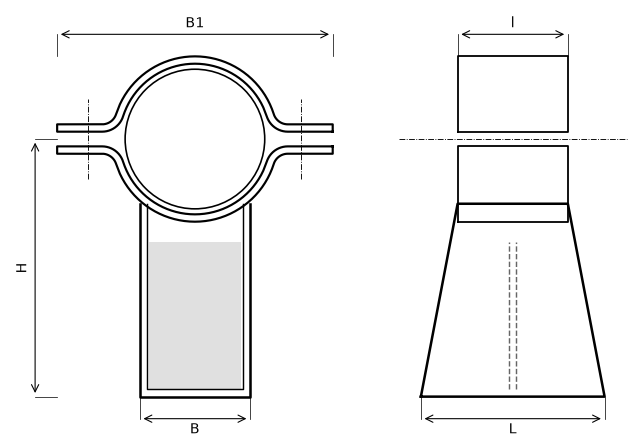

Опора скользящая с плоским хомутом ТС-625
Скользящая опора с плоским хомутом для труб малого диаметра: трубу зажимают два полухомута из листа на двух болтах, нижний полухомут приварен к П-образной скобе с ребром. К трубе ничего не приваривают.

- Диаметр трубы Dн
- 32–89 мм
- Документ
- Серия 5.903-13 вып. 8-95
- Исполнений
- 6
- Вертикальная нагрузка
- до 6 кН
- Масса
- 1–2,04 кг
- 3D-модели
- у всех исполнений
Применение и монтаж
Назначение: где применяется
Трубопроводы тепловых сетей Dн 32–89 мм. Вертикальная нагрузка от 2,5 до 6 кН — по диаметру. Тепловое перемещение — до 90 мм. Скользящие опоры применяют при всех способах прокладки (СП 124.13330.2012, п. 10.34).
Монтаж: как устанавливается
Трубу укладывают в нижний полухомут, накрывают верхним и стягивают двумя болтами с гайками. Основание скобы свободно лежит на опорной конструкции и перемещается по ней вместе с трубой.
Отличия от соседних типов
Диаметр от 108 мм — хомутовая ТС-626. Можно варить к трубе и нужна высота 150 или 200 мм — приварная ТС-623: у ТС-625 высота одна. Неподвижное крепление на тех же диаметрах — хомутовая ТС-659.
Габаритная схема ТС-625

Состав комплекта на одну опору
| Скоба гнутая | 1 шт. |
| Полухомут | 2 шт. |
| Ребро | 1 шт. |
| Болт М8 или М10 | 2 шт. |
| Гайка М8 или М10 | 4 шт. |
Таблица исполнений ТС-625
| Обозначение | Код ПРОМБУРГ | Dнмм | Вертикальная нагрузкакН | Ширина Вмм | Ширина В1мм | Высота Нмм | Длина Lмм | Массакг | 3D |
|---|---|---|---|---|---|---|---|---|---|
| ТС-625.000 | ПБ-625-0032-1 | 32 | 2,5 | 40 | 95 | 113 | 80 | 1 | 3D |
| ТС-625.000-01 | ПБ-625-0038-1 | 38 | 2,5 | 40 | 100 | 117 | 80 | 1,1 | 3D |
| ТС-625.000-02 | ПБ-625-0045-1 | 45 | 4 | 40 | 110 | 122 | 80 | 1,1 | 3D |
| ТС-625.000-03* | ПБ-625-0057-1 | 57 | 6 | 60 | 130 | 126 | 100 | 1,77 | 3D |
| ТС-625.000-04 | ПБ-625-0076-1 | 76 | 6 | 60 | 150 | 140 | 100 | 1,94 | 3D |
| ТС-625.000-05 | ПБ-625-0089-1 | 89 | 6 | 60 | 170 | 148 | 100 | 2,04 | 3D |
* Примечания к исполнениям:
- ТС-625.000-03 — Dн: «5Т» → 57, опечатка сайта; ряд Dн альбома 5.903-13 вып. 8-95 (32, 38, 45, 57, 76, 89) и STEP-сборка исполнения 03
Чтобы заказать, сообщите обозначение и код ПРОМБУРГ: +7 (499) 325-51-35, promburg@yandex.ru.
Нормативные документы
- Серия 5.903-13 вып. 8-95 Опоры трубопроводов подвижные. Рабочие чертежи (PDF, 199 с.) — документ, по которому изготавливается изделие
- СП 124.13330.2012 Тепловые сети. Актуализированная редакция СНиП 41-02-2003
Связанные позиции
- Соседний тип: ТС-626 — скользящая хомутовая
- Парная подвижная опора: ТС-659 — неподвижная хомутовая (общий диапазон Dн 32–89)
- Парная подвижная опора: ТС-670 — неподвижная хомутовая с корпусом (общий диапазон Dн 57–89)
Собрать узел с этим изделием
- Конструктор узла: собрать участок с компенсатором под свои данные труба, длина, среда, условия — состав узла и спецификация бесплатно
На трубу Dн 32–89 мм в каталоге
Позиции каталога с исполнениями на те же наружные диаметры трубы.
Детали трубопровода
- Заглушка стальная эллиптическая общих Dн: 6
- Отвод стальной крутоизогнутый 90° общих Dн: 6
- Фланец стальной воротниковый общих Dн: 6
- Фланец стальной плоский приварной общих Dн: 6
- Отвод стальной крутоизогнутый 90°, 09Г2С общих Dн: 3
- Переход стальной концентрический общих Dн: 3
Компенсаторы
- Компенсатор резиновый фланцевый NBR РКН общих Dн: 5
- Компенсатор резиновый фланцевый SBR РКС общих Dн: 5
- Компенсатор резиновый фланцевый PTFE РКТ общих Dн: 5
- Компенсатор резиновый фланцевый EPDM РКЭ общих Dн: 5
- Компенсатор сильфонный 2ОПКР общих Dн: 3
- Компенсатор сильфонный 2ОПКР (ИЯНШ) 2ОПКРИ общих Dн: 3
- Компенсатор сильфонный 2СКУ.М 2СКУМ общих Dн: 3
- Компенсатор сильфонный 2СКУ.М (ИЯНШ) 2СКУМИ общих Dн: 3
- Компенсатор сильфонный 2СКУ.ППМ 2СКУППМ общих Dн: 3
- Компенсатор сильфонный 2СКУ.ППМ (ИЯНШ) 2СКУППМИ общих Dн: 3
- Компенсатор сильфонный 2СКУ.ППУ 2СКУППУ общих Dн: 3
- Компенсатор сильфонный 2СКУ.ППУ (ИЯНШ) 2СКУППУИ общих Dн: 3
- Компенсатор сильфонный 2СКУ.ППУ/ОЦ (ИЯНШ) 2СКУППУОЦИ общих Dн: 3
- Компенсатор сильфонный DEK общих Dн: 3
И ещё 21 тип — в оглавлении каталога.
Другие опоры и подвески
- Опора неподвижная хомутовая ТС-659 общих Dн: 6
- Опора неподвижная двухупорная ТС-660 общих Dн: 6
- Опора скользящая приварная ТС-623 общих Dн: 6
- Опоры неподвижные ППУ-ОЦ (ПЭ) ППУ неподвижная общих Dн: 6
- Опоры скользящие ППУ-ПЭ(ОЦ) ППУ скользящая общих Dн: 6
- Опоры бескорпусные неподвижные ОБН общих Dн: 6
- Подвески ПГ и ПМ для горизонтальных трубопроводов ПГ, ПМ общих Dн: 6
- Крепление газопровода УКГ 15.00 общих Dн: 6
- Опоры жесткие подвесные Т22 общих Dн: 5
- Опорные плиты диэлектрические ТС-632 общих Dн: 4
И ещё 49 типов — в оглавлении каталога.
Другие типы раздела
Скользящие и катковые опоры тепловых сетей (ТС-623…ТС-632)
- Опора скользящая приварная ТС-623
- Опора скользящая приварная ТС-624
- Опора скользящая хомутовая ТС-626
- Опора скользящая бугельная ТС-627
- Опора катковая двухъярусная ТС-628
- Катковые опоры ТС-630
- Опоры сварных отводов ТС-631
- Опорные плиты диэлектрические ТС-632
Частые вопросы
Чем неподвижная опора отличается от подвижной?
Неподвижная закрепляет трубу в одной точке и принимает усилия от температурного расширения, давления и трения. Подвижная держит вес трубы и даёт ей перемещаться при нагреве. Неподвижные делят трассу на участки компенсации, подвижные стоят между ними. Место и тип каждой опоры задаёт проект.
Скользящая или катковая опора?
По СП 124.13330.2012 (п. 10.34) скользящие опоры применяют при всех способах прокладки и для всех диаметров труб. Катковые — для труб диаметром 200 мм и более при осевом перемещении, при прокладке в тоннелях, на кронштейнах, на отдельно стоящих опорах и эстакадах. Катковая опора снижает силу трения, которая передаётся на неподвижные опоры.
По какому диаметру подбирать — Dн или Ду?
По наружному диаметру трубы Dн: именно он стоит в таблицах серии. Ду — условный проход, округлённая величина: Ду 100 соответствует Dн 108. В заявке указывайте Dн и толщину стенки трубы.
Какую нагрузку выдерживает опора?
Допускаемая нагрузка задана в таблице для каждого исполнения — она в первой группе колонок каждой карточки. Хомутовая ТС-659 — осевая Q от 5 до 25 кН, щитовая ТС-666 — от 50 до 3300 кН, хомутовая с корпусом ТС-670 — Q до 380 кН и боковая T до 200 кН.
Как расшифровать ТС-659.00.00-03?
ТС-659.00.00 — номер чертежа типа опоры в серии 5.903-13, здесь это неподвижная хомутовая ТС-659. Цифры после дефиса — номер исполнения по таблице: -03 — это Dн 57 мм. Для заказа достаточно полного обозначения и количества. Рядом в каждой карточке стоит короткий код ПРОМБУРГ вида ПБ-659-0057-1: тип, Dн, номер исполнения.
Что указать в заявке, чтобы получить цену без уточнений?
Обозначение с номером исполнения или код ПБ, количество, Dн и стенку трубы, расчётную температуру наружного воздуха, покрытие, город доставки и желаемый срок. Кнопка «В заявку» в таблице собирает спецификацию, которую можно выгрузить в Excel или отправить письмом.